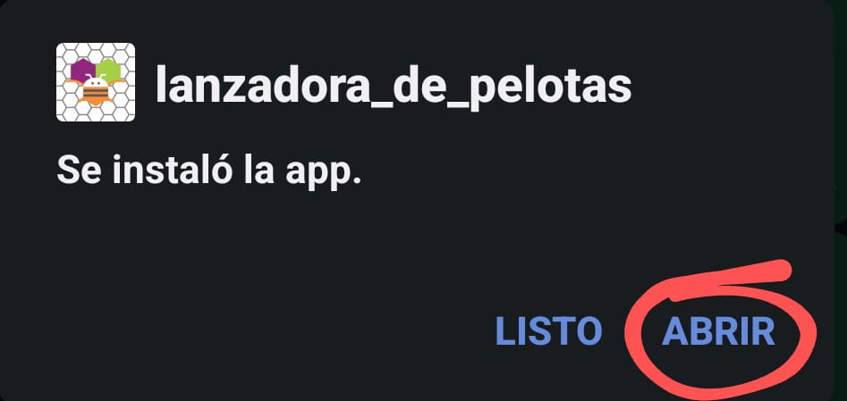
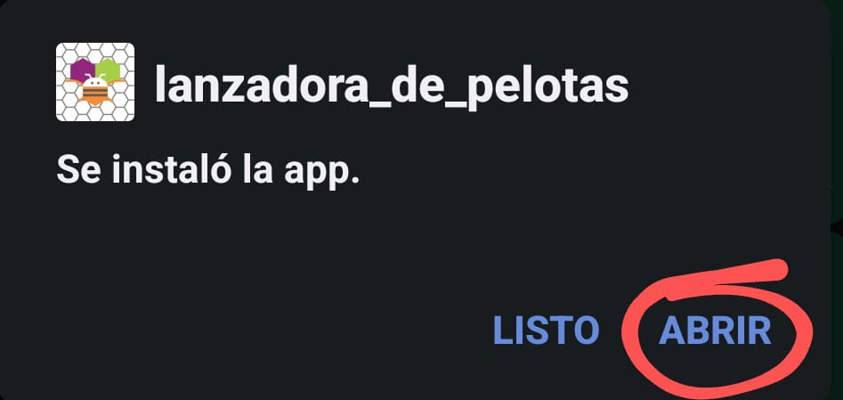

Descargar
Una vez que se haya descargado, instalelo en su dispositivo.
Ya que se instalo la aplicacion presione "abrir".

!Ahora sí¡ Es momento de que pueda disfrutar de la aplicación

Agradecemos tu peferncia hacia Volley Cannon Machine, estamos completamente seguros de que no te
arrepentiras por darnos la oportunidad de mejorar tus entrenamientos .
En este apartado podras encontrar información sobre como conectrate a tu maquina, así como el APK de la aplicación,
cabe aclarar que todo lo que se presenta en esta pagina web ha sido revisado cuidadosamente para no afectar a tu dispositivo movil.
Para obtener la aplicacion solo precione "Descargar" que aparece a continuación
Descargar
Una vez que se haya descargado, instalelo en su dispositivo.
Ya que se instalo la aplicacion presione "abrir".

!Ahora sí¡ Es momento de que pueda disfrutar de la aplicación
Una vez que este dentro de la aplicacion precione donde dice "Lista de Bluetooth"

Posteriormente precione en "Permitir"esto hara que la aplicacion pueda acceder al Bluetooth del dispositivo con la intención de mostrar los dispositivos cercanos a los que te puedes conectar

A continuacion vuelva a precionar "Lista de Bluetooth" y seleccione el dispositivo que termine en "HC-05"

!Listo¡ Así de facil se puede conectar a su lanzadora, no olvide leer como funciona la aplicación para poder utilizar su lanzadora de la mejor manera
La aplicacion se divide en 4 partes fundamentales que son:
1)"Lista de Bluetooth"
2)"Botones de ncedido de los Motores"
3)"Botonnes
de apagado de los Motores"
4)"Complemento".


LISTA DE Bluetooth
Con este boton podremos tener acceso a una lista con los dispositivos Bluetooth mas cercanos a nuestro dispositivo,
la podremos encontrar en la parte superior de la aplicación, recordemos que para que funcione debemos aceptar los permisos que solicita.
BOTONES DE ENCENDIDO PARA LOS MOTORES Los podremos encontrar justo de bajo de la lista de bluetooth, etsa dividida en 3 columnas, la primera es para el Motor Izquierdo,
la segunda es para activar Ambos Motores a la vez y la tercer columna es para activar el Motor Derecho.
Las 3 columnas cuentan co 4 velocidades diferentes llendo de la potencia mas alta hacia la mas baja,
la velocidades con las que cuenta son: 255RPM
225RPM
200RPM
160RPM
Dentro de las funciones de estos motores esta la posivilidad de convinar dos velocidades
diferentes entre el motor izquierdo y el derecho, solo tendras que selccionar la velocidad que quieres en la columna de cada motor
MOTONES DE APAGADO DE LOS MOTORES
En esta parte tenemos 3 Botones, el primero es para el "Motor Izquierdo", el segundo es para apagar "Ambos Motores" y el tercer boton es para apagar el "Motor Derecho"
Complemento
El complemento cuenta con dos partes
1)Despleglable:
En la lista "Despleglable" podra seleccionar la cantidad de pelotas que le pndra a la maquina,
el objetivo de esto es para que el coplemento permita la activacion de la copuerta que estara conectado a la maquina "Unicamente la cantidad de veces que selecciono"
2)Encendido y Apagado: Una vez que hayas seleccinado la cantidad de pelotas preciona el boton de "Encendido", esto activara el complemento
las veces elegidas, una vez que termine automaticamente se detendra. El boton de "Apagado" se podra utilizar si quiere interrumpir el ciclo o se atoro algo en el complemento